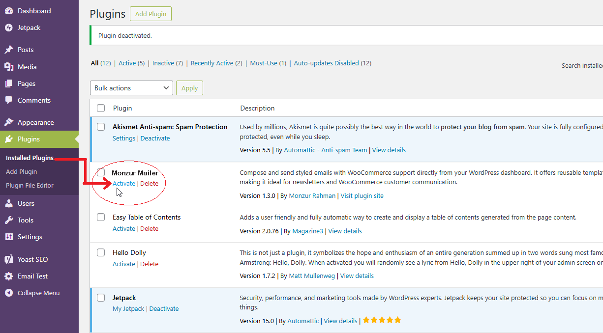

Monzur Mailer wordpress plugin documentation
Monzur Mailer - Documentation
Version: 1.3.0 | Author: Monzur Rahman | Support: wordpress.org Forum
A) Introduction
Thank you for choosing Monzur Mailer! This comprehensive documentation will guide you through installing, configuring, and using the plugin to send professional emails directly from your WordPress dashboard.
Monzur Mailer is a robust email solution designed for WordPress administrators to compose and send styled emails with ease. It offers recipient targeting, reusable templates, SMTP support, and detailed logging, making it ideal for newsletters, announcements, and WooCommerce customer communication.
Successful email delivery depends on proper server configuration, DNS authentication (SPF, DKIM, DMARC), and a reliable SMTP service. This guide includes detailed setup instructions using NameSilo (DNS provider) and Brevo (SMTP provider) as references.
For support, visit our Wordpress item page. Ensure you review the Email Deliverability Setup section to maximize email success rates.
B) Key Features
- Dashboard Email Composer: Create and send emails without leaving WordPress.
- Rich Text Editor: Use TinyMCE to format emails with images, links, and styles.
- Flexible Recipient Targeting:
- Manual email entry (comma-separated).
- All WordPress users or specific roles (e.g., Subscriber, Editor).
- WooCommerce customers or shop managers (if WooCommerce is active).
- Email Templates:
- Create and manage up to 10 reusable templates.
- Load templates instantly in the composer.
- Edit or delete templates as needed.
- SMTP Support: Configure SMTP (e.g., Brevo) for reliable email delivery.
- Global Settings:
- Custom From Name, From Email, and footer note.
- Test email functionality and diagnostics.
- Email Logging:
- Track up to 20 sent emails with status (Sent/Failed), recipient, subject, and date.
- Clear logs with one click.
- Secure & Compliant: Uses WordPress nonces, sanitization, and coding standards.
- Developer-Friendly: Extensible via WordPress filters.
C) Requirements & Dependencies
Minimum Requirements
- WordPress: Version 5.0 or higher.
- PHP: Version 7.4 or higher.
- MySQL: Version 5.6 or higher, or MariaDB 10.1 or higher.
- Server: A web server (e.g., Apache, Nginx) with email-sending capabilities (PHP
mail()or SMTP). - WooCommerce: Version 4.0 or higher (optional, for customer/shop manager targeting).
Dependencies & Limitations
Monzur Mailer relies on external factors for successful email delivery:
- Server Dependencies:
- The server must support PHP
mail()or allow SMTP connections (ports 587, 465, or 2525). - Hosting providers may block SMTP ports or restrict email sending, requiring coordination with your host.
- The server must support PHP
- DNS Dependencies:
- Proper SPF, DKIM, and DMARC records are required for email authentication to avoid spam filtering or rejection by providers like Gmail and Yahoo.
- DNS changes take 24–48 hours to propagate.
- SMTP Service Provider:
- An SMTP service (e.g., Brevo, SendGrid) is strongly recommended for reliable delivery.
- SMTP providers may impose daily sending limits (e.g., Brevo’s free plan: 300 emails/day).
- Correct SMTP credentials and domain verification are mandatory.
- Limitations:
- Email delivery success depends on external factors (server, DNS, SMTP provider) beyond the plugin’s control.
- The plugin logs up to 20 emails; older logs are overwritten.
- Template storage is limited to 10 templates.
- High-volume sending may require a premium SMTP plan or hosting adjustments.
Failure to configure DNS records or SMTP settings may result in emails being rejected or sent to spam. Follow the Email Deliverability Setup section carefully.
D) Installation
Before installing, ensure your server meets the requirements and download the plugin ZIP file from wordpress.org.
Method 1: WordPress Admin Upload (Recommended)
- Log in to your WordPress Dashboard.
- Go to Plugins > Add New.
- Click Upload Plugin at the top.
- Click Choose File and select
monzurmailer.zip. - Click Install Now.
- After installation, click Activate Plugin.

Method 2: FTP Upload
- Unzip
monzurmailer.zipto get themonzurmailerfolder. - Connect to your server using an FTP client (e.g., FileZilla).
- Navigate to
wp-content/plugins/in your WordPress installation. - Upload the
monzurmailerfolder. - In your WordPress Dashboard, go to Plugins.
- Find monzurmailer and click Activate.
After activation, configure SMTP and DNS settings in the Email Deliverability Setup section to ensure emails are sent successfully.
E) Email Deliverability Setup
To ensure emails sent via Monzur Mailer reach recipients’ inboxes, you must configure DNS records (SPF, DKIM, DMARC) and an SMTP service.
Email delivery generally will work after setup of SPF and DKIM. We recommend brevo.com or SendGrid (free plan: 100 emails/day). For SendGrid - Host: smtp.sendgrid.net, Port: 587, Username: apikey, Password: [Your API Key], Encryption: TLS. Alternatively, use Google Workspace (smtp.gmail.com, Port 587, TLS) for low-volume emails. Avoid "noreply" addresses in the From Email field above to improve deliverability. This section provides step-by-step instructions using NameSilo (DNS provider) and Brevo (SMTP provider) as examples. For other providers, consult their documentation, but the principles remain similar.
Since February 2024, Gmail, Yahoo, and other providers require SPF and DKIM for bulk senders. Misconfigured DNS or SMTP settings may cause emails to be rejected or marked as spam.
1. Setting Up SPF Record (NameSilo)
The SPF (Sender Policy Framework) record authorizes Brevo to send emails for your domain (e.g., onepagereview.com).
- Log in to NameSilo and go to Domain Management > Manage DNS for your domain.
- Click Add/Edit Record.
- Enter:
- Type: TXT
- Name: @ (or leave blank for root domain)
- Text:
v=spf1 include:_spf.sib.com ~all(Brevo only)
OR
v=spf1 include:_spf.sib.com include:_spf.mail.hostinger.com ~all(if using Hostinger email) - TTL: 3600 (default)
- Click Submit.
- Wait 24–48 hours for DNS propagation.
- Verify with MX Toolbox:
- Search
spf:yourdomain.com. - Ensure
include:_spf.sib.comappears with no errors.
- Search
Only one SPF record is allowed per domain. Merge includes if using multiple email services (e.g., Hostinger and Brevo).
2. Setting Up DKIM Record (NameSilo & Brevo)
DKIM (DomainKeys Identified Mail) adds a digital signature to verify email authenticity. Brevo supports both manual and automatic domain authentication to set up DKIM.
- Automatic Authentication (Recommended):
- In Brevo, go to Account Dropdown > Senders, Domains & IP > Domains.
- Click Add a domain, enter
yourdomain.com, and select Authenticate automatically. - Provide your domain registrar credentials (e.g., NameSilo/Hostinger API key or login details).
- Brevo will add the DKIM record (and possibly Brevo code and DMARC) automatically to your domain’s DNS settings.
- Wait 24–48 hours for DNS propagation.
- In Brevo, click Authenticate this email domain. A green checkmark appears after successful verification.
- Verify with MX Toolbox:
- Search
dkim:yourdomain.com:sib(or Brevo’s selector). - Expect
dkim=pass.
- Search
- Manual Authentication:
- In Brevo, go to Account Dropdown > Senders, Domains & IP > Domains.
- Click Add a domain, enter
yourdomain.com, and click Save. - Brevo generates 1–2 DNS records for DKIM (TXT or CNAME) and may suggest a Brevo code or DMARC record. Copy the DKIM record(s) provided.
- Example records:
- TXT:
- Host: sib._domainkey
- Value:
p=MIGfMA0GCSqGSIb3DQEBAQUAA4GNADCBiQKBgQC...
- CNAME (if provided):
- Host: s1._domainkey, Value:
s1._domainkey.sib.com - Host: s2._domainkey, Value:
s2._domainkey.sib.com
- Host: s1._domainkey, Value:
- TXT:
- In NameSilo, go to Manage DNS and add:
- For TXT:
- Type: TXT
- Name: sib._domainkey
- Text:
p=MIGfMA0GCSqGSIb3DQEBAQUAA4GNADCBiQKBgQC... - TTL: 3600
- For CNAME (repeat for each):
- Type: CNAME
- Name: s1._domainkey
- Text:
s1._domainkey.sib.com - TTL: 3600
- For TXT:
- Click Submit.
- Wait 24–48 hours for DNS propagation.
- In Brevo, click Authenticate this email domain. A green checkmark appears after successful verification.
- Verify with MX Toolbox:
- Search
dkim:yourdomain.com:sib. - Expect
dkim=pass.
- Search
Check the below tutorial for more details: Brevo Domain Authentication Guide
Note: DNS changes take 24–48 hours to propagate globally. Test deliverability only after this period. If automatic authentication fails, use the manual method or contact Brevo support.
3. Setting Up DMARC Record (NameSilo)
DMARC (Domain-based Message Authentication, Reporting, and Conformance) defines how to handle emails failing SPF/DKIM checks. Since February 2024, Gmail, Yahoo, and Microsoft require DMARC for bulk senders to ensure compliance and improve deliverability. If Brevo’s automatic authentication added a DMARC record, verify it in NameSilo’s DNS settings. If no DMARC record exists, add one manually.
- In NameSilo, go to Manage DNS and add:
- Type: TXT
- Name: _dmarc
- Text:
v=DMARC1; p=none; rua=mailto:rua@dmarc.brevo.com - TTL: 3600
- Click Submit.
- Wait 24–48 hours for DNS propagation.
- Verify with MX Toolbox:
- Search
dmarc:yourdomain.com. - Expect a valid DMARC record.
- Search
- Create
dmarc-reports@yourdomain.comto receive reports.
Start withp=nonefor testing. After confirming deliverability, considerp=quarantineorp=rejectfor stricter enforcement. DNS changes take 24–48 hours to propagate.
4. Verifying Sender Email (Brevo)
Brevo requires verifying the sender email to authorize sending.
- In Brevo, go to Account Dropdown > Senders, Domains & IP > Senders.
- Click Add a sender.
- Enter From Email (e.g.,
no-reply@yourdomain.com) and From Name (e.g., “Your Site Name”). - Click Save.
- Check your email for a 6-digit code and enter it in Brevo.
- Confirm a green checkmark next to the sender.
If DKIM is set up, sender verification may be optional. Use the same From Email as in Monzur Mailer Settings tab.
5. Configuring SMTP in Monzur Mailer
Enable SMTP in Monzur Mailer for reliable email delivery.
- In Brevo, go to Account Dropdown > SMTP & API.
- Copy SMTP Login and SMTP Key (regenerate if needed).
- In WordPress, go to Monzur Mailer > Settings.
- Check Enable SMTP and enter:
- Host:
smtp-relay.brevo.com - Port: 587 (or 465 for SSL, 2525 as fallback)
- Username: [Brevo SMTP Login]
- Password: [Brevo SMTP Key]
- Encryption: TLS
- Host:
- Click Save Changes.
- Send a test email from Settings > Send Test Email to verify.
Contact your hosting provider to ensure ports 587, 465, and 2525 are open for smtp-relay.brevo.com.
F) Getting Started - The Admin Interface
After installation and deliverability setup, configure Monzur Mailer via the Monzur Mailer menu in your WordPress dashboard. The plugin has four tabs: Composer, Settings, Email Logs, and Templates.
1. Composer Tab
Compose and send emails using the rich text editor.
- Recipient Type: Choose:
- Manual Email Entry: Enter emails (comma-separated).
- All WordPress Users: Send to all registered users.
- Users by Role: Select a role (e.g., Subscriber).
- WooCommerce: All Customers: Target customers (if WooCommerce is active).
- WooCommerce: All Shop Managers: Target shop managers.
- Load from Template: Select a saved template to auto-fill Subject and Message.
- Subject: Enter the email subject.
- Message: Use TinyMCE to format the email body.
- Click Send Email to send. Check Email Logs for status.
2. Settings Tab
Configure global email settings and SMTP.
- From Name: Sender name (e.g., “Your Site Name”).
- From Email: Sender email (e.g.,
no-reply@yourdomain.com). Use your domain for best deliverability. - Email Footer Note: Text appended to all emails (e.g., unsubscribe info).
- SMTP Settings: Enable and configure SMTP (see Email Deliverability Setup).
- Send Test Email: Test email delivery to any address.
- Email Diagnostics: View server email capabilities for troubleshooting.
3. Email Logs Tab
View the last 50 sent emails.
- To: Recipient group (e.g., “All Customers”).
- Subject: Email subject.
- Date: Send date/time.
- Status: ✅ Sent or ❌ Failed.
- Clear All Logs: Delete all log entries.
4. Templates Tab
Create and manage reusable email templates.
- Add New Template: Enter Title, Subject, Message, and save.
- Saved Templates: Edit or delete existing templates.
<body> This Code only</body>
when using code in the Message portion and in code editor.
G) For Developers (Hooks & Filters)
Monzur Mailer includes WordPress filters for customization. Add these to your theme’s functions.php or a custom plugin.
Filter: wpqm_mail_subject
Modify the email subject before sending.
add_filter('wpqm_email_subject', 'prepend_sitename_to_subject', 10, 1);
function prepend_sitename_to_subject($subject) {
$site_name = get_bloginfo('name');
return '[' . $site_name . '] ' . $subject;
}
Filter: wpqm_mail_message
Modify the email body.
add_filter('wpqm_email_message', 'add_custom_disclaimer_to_message', 10, 1);
function add_custom_disclaimer_to_message($message) {
$disclaimer = "
This email is confidential.
";
return $message . $disclaimer;
}
Filter: wpqm_mail_headers
Modify email headers.
add_filter('wpqm_email', 'add_custom_mail_header', 10, 1);
function add_custom_mail_header($headers) {
$headers[] = 'X-Mailer: monzurmailer-Custom';
return $headers;
}
Use filters cautiously to avoid breaking email functionality.
H) Troubleshooting Questions & Answers
Q: Why are my emails going to spam folders?
This is usually due to missing DNS records or SMTP configuration, poor sender reputation, spammy content, or low engagement/unfamiliar sender/domain.
- Verify SPF, DKIM, and DMARC records (see Email Deliverability Setup). Wait 24–48 hours for DNS propagation before testing.
- Note: Brevo uses its own domains (e.g.,
sender-sib.com) for the Envelope From, so SPF alignment may fail. This is normal, and DMARC compliance is achieved through DKIM. - Ensure SMTP is enabled with valid credentials in the Settings tab.
- Use
no-reply@yourdomain.comfor From Email, not a free email service (e.g., Gmail). - Send a test email from Settings and check Email Logs.
- Review
wp-content/debug.log(enableWP_DEBUG_LOGinwp-config.php).
Q: I used Brevo’s automatic authentication, but emails aren’t sending or are going to spam. What’s wrong?
Automatic authentication simplifies DNS setup, but issues may still occur.
- Ensure the SPF record is set in NameSilo (e.g.,
v=spf1 include:_spf.sib.com ~all). Wait 24–48 hours for propagation. - Verify that Brevo added the DKIM (and optionally DMARC) records in NameSilo’s DNS settings. Check with MX Toolbox (
dkim:yourdomain.com:sibordmarc:yourdomain.com). - Confirm the sender email is verified in Brevo (Senders, Domains & IP > Senders).
- Check Monzur Mailer’s Email Logs and enable
WP_DEBUG_LOGfor errors. - Contact Brevo support if DNS records weren’t added automatically or if deliverability issues persist.
Q: I see “Failed” in Email Logs. Why?
This indicates wp_mail() couldn’t send the email, likely due to server or SMTP issues.
- Check SMTP settings in the Settings tab.
- Confirm ports 587/465/2525 are open with your host.
- Regenerate SMTP credentials in Brevo.
- Enable debug logging in
wp-config.php:define('WP_DEBUG', true); define('WP_DEBUG_LOG', true); define('WP_DEBUG_DISPLAY', false); - Check
wp-content/debug.logfor errors (e.g., “SMTP connect() failed”).
Q: Can I test the Spammyness of my Emails or setup?
Verify email setup in Monzur Mailer's settings and test with a free tools like Mail-Tester.
We don't guarantee the service of those third party tools but we found it working
Q: Can I use Monzur Mailer without SMTP?
Yes, but PHP mail() is less reliable and often blocked by hosts or filtered by recipients. SMTP (e.g., Brevo) is strongly recommended.
Q: Why is my test email not sending?
Possible causes: incorrect SMTP settings, blocked ports, or unverified sender/domain. Follow the Email Deliverability Setup section and check logs.
I) Changelog
--- 1.3.0 (Current) ---
- [Added] Centralized handler for clearing email logs.
- [Added] Transients for persistent admin notices.
- [Fixed] Admin notices display on specific tabs.
- [Fixed] UI flicker on page load.
- [Improved] Refactored tab navigation for reliability.
- [Improved] Cleaned up tab file code, centralized processing.
- [Improved] Added options cleanup in uninstall.php.
--- 1.2.0 ---
- [Added] Initial wordpress release.
- [Added] Email composer with TinyMCE.
- [Added] Recipient targeting by role and WooCommerce.
- [Added] Email template system.
- [Added] Settings, Logging, and Diagnostics.
J) Support
We don't offer dedicated support via wordpress.org forum comments and support sections for Monzur Mailer.
Include the following when requesting support:
- Monzur Mailer version.
- WordPress version.
- Detailed issue description.
- Error messages (if any).
- Email Diagnostics from the Settings tab.
- Email Logs and
wp-content/debug.log(if applicable).
Check the Troubleshooting/FAQ section before contacting support.
K) Credits
Monzur Mailer was developed with passion, adhering to WordPress coding standards and leveraging core functions like wp_mail().
I’m a passionate web developer who loves making WordPress premium features accessible for free. I work as a freelance web developer and WordPress expert, and I’ve been exploring WordPress for over a decade. Still learning every day, I enjoy working with WordPress, cPanel, and website maintenance. if you face any technical difficulties when using this plugin you can contact me: monzurbcc@gmail.com . I will try to help you when i get a chance. But remember that's not the guarantee of this plugin, just friendly little work .